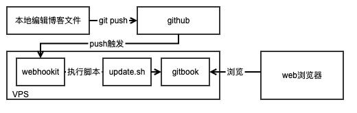

Gitbook+Github搭建博客
1 简述
最近想有个博客记录学习经验，尝试简书、CSDN等平台后，难以接受的是广告太多和布局繁杂，萌生起自己搭建博客的想法。在学校期间试过在VPS上搭建wordpress写博，同时碰巧看到一些gitbook搭建的技术博客，于是决定在VPS上用gitbook搭建自己的博客。
搜了一圈搭建经验后，总结整体的框架如图1所示。

2 各环节介绍
2.1 VPS
之前用过digitalOcean的VPS搭建ss科学上网，但国内访问不畅通，权衡之下决定购买国内VPS。简单对比了百度云和腾讯云的VPS价格，最后购买了腾讯云半年VPS，三百多大洋，还送免费的域名。
2.2 Gitbook
实际上，GitBook 是一个基于 Node.js 的命令行工具，支持 Markdown 和 AsciiDoc 两种语法格式，可以输出 HTML、PDF、eBook 等格式的电子书。所以我更喜欢把 GitBook 定义为文档格式转换工具。 Gitbook Editor集成了Git和Markdown功能，支持同步到gitbook.com，但是国内访问gitbook.com受限，所以还是用自己单独的服务器陨星Gitbook靠谱。
安装命令：npm install -g gitbook-cli
执行初始化命令gitbook init之后，你会看到两个文件README.md和SUMMARY.md，他们作用如下：
- README.md 书籍的介绍
- SUMMARY.md 书籍的目录结构和属性配置
在此目录下，我们通过编辑md文件，并在SUMMARY.md中修改对应的目录结构。
接着我们执行gitbook build .构建书籍，可以看到有_book文件夹生成，里面是具体的html和js等文件。最后执行gitbook serve --port=8080，然后打开http://localhost:8080就可以看到书籍了。
2.3 webhook
我们本地编辑完成后，通过git命令上传到我们的github，github支持在线查看md文件内容，此时我们就相当于有了自己的博客了。